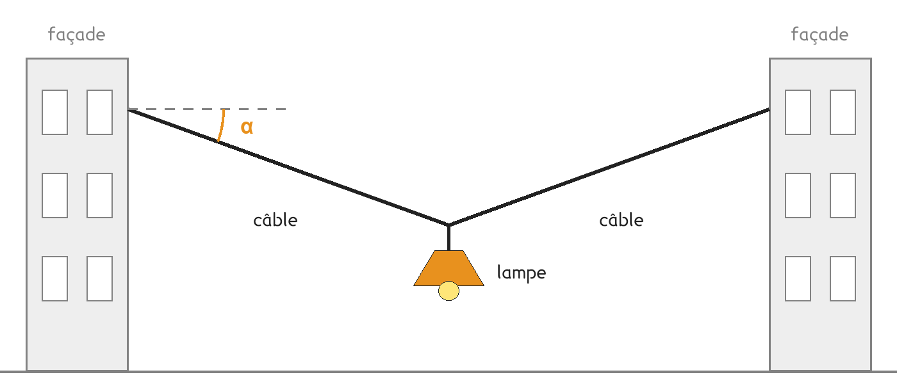
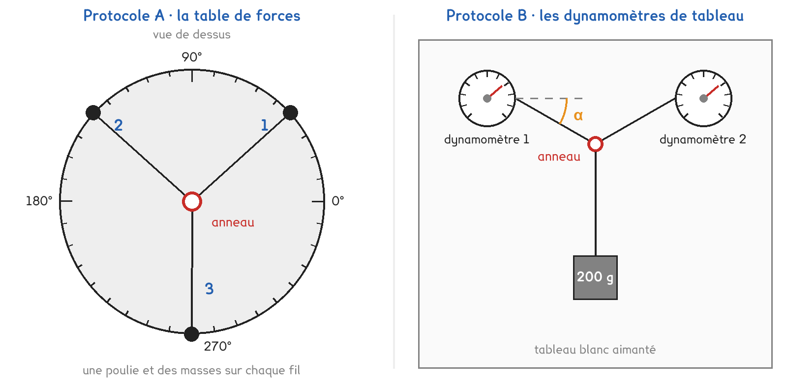
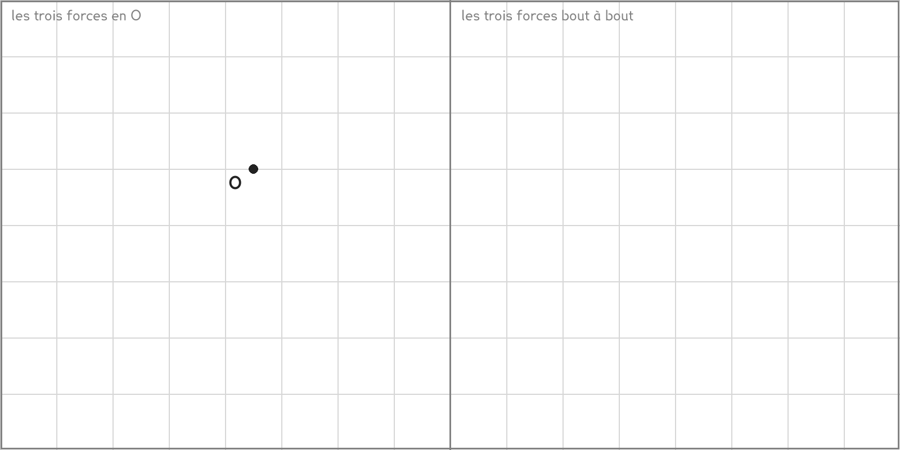

2de Bac Pro · toutes spécialités · TP commun 2DE-04
Que devient la force dans chaque câble quand on le tend presque à l'horizontale ?
3 figures
Sujet. Au-dessus d’une rue piétonne, une lampe est suspendue au milieu d’un câble tendu entre deux façades. Plus on tend le câble, plus la lampe remonte. L’installateur voudrait qu’elle remonte jusqu’à ce que le câble soit bien droit, à l’horizontale.

Problématique : que devient la force dans chaque câble quand on le tend presque à l’horizontale ?
Au laboratoire, on travaille sur une maquette : la lampe est remplacée par une masse de 200 g, les câbles par des fils.
On étudie le point O où se rejoignent les deux câbles et la suspension de la lampe.
a) Compléter le tableau des trois actions qui s’exercent sur le point O.
| L’action | Exercée par | Sa direction, entourer |
|---|---|---|
| le poids de la lampe, noté P | …………………………… | verticale · oblique |
| la tension du câble de gauche, T1 | …………………………… | verticale · oblique |
| la tension du câble de droite, T2 | …………………………… | verticale · oblique |
On prend g = 9,8 N/kg.
b) Calculer le poids de la masse de 200 g. Écrire le calcul et l’unité.
P = ……………… × ……………… = ……………… N
Deux protocoles répondent à la même question. Le matériel du laboratoire permet de faire les deux en même temps : une partie de la classe prend A, l’autre prend B, et on compare à la fin.

Protocole A · la table de forces. Trois fils partent d’un anneau et passent chacun sur une poulie. Des masses tirent sur chaque fil. On choisit les forces en choisissant les masses, puis on cherche l’angle qui laisse l’anneau bien centré.
Protocole B · les dynamomètres de tableau. Deux dynamomètres aimantés retiennent un anneau auquel pend la masse de 200 g. On choisit l’angle α en écartant les dynamomètres, puis on lit la force dans chaque fil.
c) Compléter le tableau pour comparer les deux protocoles.
| Protocole A | Protocole B | |
|---|---|---|
| Ce qu’on règle | …………………………… | …………………………… |
| Ce qu’on mesure | …………………………… | …………………………… |
| La maquette est verticale, comme la vraie rue | oui · non | oui · non |
Le choix se fait maintenant, avant de toucher au matériel.
d) Quel protocole prenez-vous ? Justifier en une phrase. Le professeur peut vous imposer celui qui reste disponible.
Je prends le protocole ……… parce que ……………………………………………………………………
e) Avant de mesurer, faire une hypothèse. Quand on tend le câble, l’angle α diminue. La force dans chaque câble, entourer :
augmente · diminue · ne change pas
Avant de commencer
Chaque dynamomètre se met à zéro dans la position où il va servir, fil décroché.
On ne dépasse jamais 5 N : c’est la limite des dynamomètres. Si l’aiguille arrive en butée, on décroche la masse.
Une masse se pose sur la table, jamais au-dessus des pieds.
Pour ce protocole, la force dans un câble se calcule : T1 = T2 = m × g, avec m en kilogrammes.
Pour ce protocole, la force dans un câble se lit directement.
f) Schématiser le montage de votre protocole : les fils, l’anneau, la masse et l’angle α.
Le schéma se dessine sur la feuille du TP.
g) Relever les trois essais. Unités dans la première colonne, rien d’autre à écrire.
| Essai | 1 | 2 | 3 |
|---|---|---|---|
| Angle α (°) | |||
| Force dans le câble de gauche, T1 (N) | |||
| Force dans le câble de droite, T2 (N) | |||
| Poids de la masse, P (N) |
Pour la question suivante, prendre l’essai où α vaut 30°, ou celui qui s’en approche le plus.
h) Dans le cadre de gauche, représenter en O les trois forces, à l’échelle 1 cm pour 0,5 N. Dans le cadre de droite, les reporter bout à bout, la suivante partant de la pointe de la précédente. Carreaux de 1 cm.

i) Les droites d’action des trois forces passent-elles par un même point ? Mises bout à bout, les trois forces forment-elles un triangle fermé ?
j) Votre hypothèse de la question e est-elle confirmée par vos trois essais ? Comparer avec un groupe qui a pris l’autre protocole : trouve-t-il la même chose ?
k) Pourquoi le protocole B ne permet-il pas l’essai à α = 10° ? Que se passerait-il si l’on voulait un câble parfaitement horizontal ?
l) Répondre à la problématique en deux phrases, pour l’installateur.
Ce que ce TP a établi, et qui vaut pour tout solide :
À RETENIR
Un solide soumis à trois forces est en équilibre quand les trois droites d’action sont concourantes, c’est-à-dire qu’elles passent par un même point, et quand les trois forces, mises bout à bout, forment un triangle fermé.
Plus un câble chargé est proche de l’horizontale, plus la force qu’il supporte est grande. Un câble qui porte une charge n’est jamais parfaitement horizontal.
Une personne de 70 kg s’allonge dans un hamac. Ses deux cordes font chacune un angle α avec l’horizontale. Pour α = 30°, chaque corde supporte à peu près le poids de la personne, soit 690 N.
Sans calculer, entourer la valeur plausible pour chaque corde quand on tend le hamac à α = 10°.
environ 350 N · environ 690 N · environ 2 000 N
Pourquoi les fabricants conseillent-ils de laisser le hamac pendre ?
TP commun de physique-chimie, toutes spécialités. Le travail se fait sur la feuille du TP : cette page en est la version à l'écran, sans les lignes à remplir. Rien n'est enregistré.